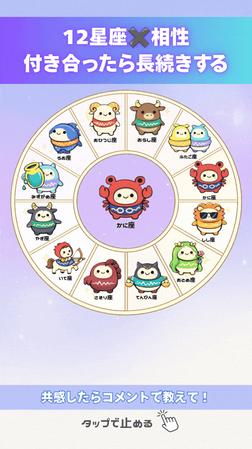
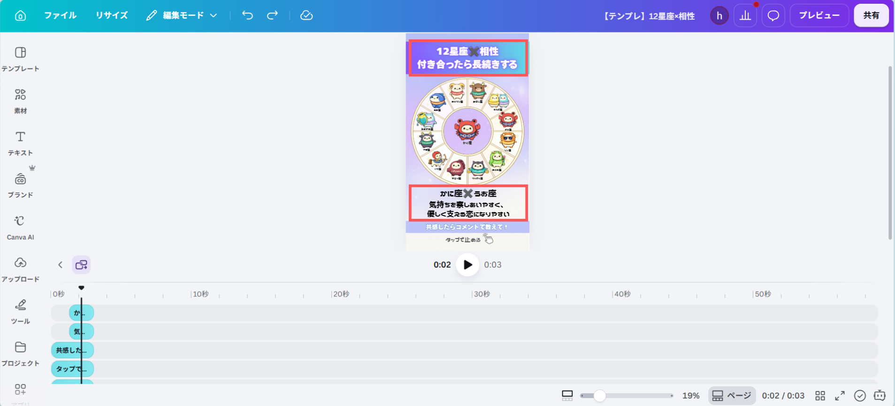

✦ どんな動画ができる？
真ん中のキャラクターが、周りに並んだ12星座のキャラクターのところへ 順番に移動していき、 止まったところで下に一言鑑定が現れる、 相性診断のリール動画です。
▲ 右が完成イメージ（実際のテンプレのサンプルです）

▲ これが完成イメージ（実際のテンプレのサンプルです）
テンプレを自分用にコピー
まずは下のボタンからテンプレートを開きます。開いたら 「テンプレートを使用」 （または右上の … →「コピーを作成」）を押して、 あなたのCanvaの中に複製しましょう。
🎨 12星座×相性テンプレートを開く⚠ ここ大事！
元のテンプレートに直接書き込まず、必ず「コピー」してから編集してください。 コピーを作れば、何度でも作り直せます。※Canvaのアカウントが必要です（無料でOK）。スマホアプリでもパソコンでも作れます。
AIで相性診断の内容を作る
動画に入れる「テーマ × 12組の星座ペア × 一言鑑定」は、 AI（ChatGPT や Gemini）に作ってもらうと一瞬です。 下の呪文（プロンプト）をコピーして、AIに貼り付けるだけ。
あなたはバズる相性診断ショート動画を作るプロの構成作家です。 「12星座×相性」をテーマにした、インスタ用の縦型診断動画の原稿を作ってください。 【背景】 中央のキャラクターが周りの12星座のキャラクターへ順番に移動していき、 止まったところで下に一言鑑定が現れる演出のテンプレです。 【作ってほしいもの】 ・思わず見たくなるテーマを1つ（例：「付き合ったら長続きする」「一目惚れされやすい」系） ・12星座（おひつじ座〜うお座）それぞれについて、相性の良い相手の星座を1つずつペアにする ・各ペアに、2行以内・20文字程度の一言鑑定（例のような文章量） 【条件】 ・テーマは惹きのある切り口で、思わずコメントしたくなるようなものにする ・12星座それぞれに1組ずつペアをつける（同じ星座を何度使ってもOK） ・一言鑑定が長すぎるとテンプレの枠からはみ出すので、20文字程度を厳守 【出力フォーマット】※この形のまま出して ━━━━━━━━━━ ■テーマ：（テーマ名） ①おひつじ座✖️（相手の星座）｜（一言鑑定） ②おうし座✖️（相手の星座）｜（一言鑑定） ③ふたご座✖️（相手の星座）｜（一言鑑定） ④かに座✖️（相手の星座）｜（一言鑑定） ⑤しし座✖️（相手の星座）｜（一言鑑定） ⑥おとめ座✖️（相手の星座）｜（一言鑑定） ⑦てんびん座✖️（相手の星座）｜（一言鑑定） ⑧さそり座✖️（相手の星座）｜（一言鑑定） ⑨いて座✖️（相手の星座）｜（一言鑑定） ⑩やぎ座✖️（相手の星座）｜（一言鑑定） ⑪みずがめ座✖️（相手の星座）｜（一言鑑定） ⑫うお座✖️（相手の星座）｜（一言鑑定） ━━━━━━━━━━ 例： かに座✖️うお座｜気持ちを察しあいやすく、優しく支える恋になりやすい
💡 使い方のコツ
- 気に入らないペアや鑑定文は「③だけ作り直して」と頼めばOK
- 一言鑑定が長いと枠からはみ出すので、20文字程度を目安に
- 出てきた内容を、次のSTEPでテンプレに貼っていきます
※AIは無料版でOK。ChatGPT・Gemini・Copilot など、お使いのものでどうぞ。
テーマ・鑑定文を編集（全12ページ）
コピーしたテンプレを開いて、AIが作った原稿を貼り付けていきます。 各ページには上のテーマ見出しと、 下のペア＋一言鑑定の2箇所があります。
-
1
変えたい文字を ダブルクリック → 文字を全選択する
-
2
上の見出しにテーマ（例：「12星座✖️相性」「付き合ったら長続きする」）を貼り付け
-
3
下のボックスに、そのページの中央のキャラに対応するペアと一言鑑定（例：「かに座✖️うお座」「気持ちを察しあいやすく、優しく支える恋になりやすい」）を貼り付け
-
4
12ページぶん、同じ作業をくり返します

⚠ はみ出し注意
テーマも一言鑑定も、長いと枠からはみ出します。元の文字数を目安に短めにまとめましょう。キャラクターのアニメーションをつける
中央のキャラクターが、そのページで組み合わせた周りのキャラクターのところへ 動いて見えるように、パスアニメーションを設定します。
-
1
中央のキャラクター（グループ）を選択し、上のツールバーの「アニメーション」を押す
-
2
「カスタム」の「アニメーションを作成」を選ぶ
-
3
キャンバス上で、中央のキャラから組み合わせたい周りのキャラの位置まで矢印をドラッグしてパスを描く（「速度」スライダーで動く速さも調整できる）
-
4
お好みで「エフェクトを追加」（回転・ゆらめき・パルス・小刻みな動き）を足して、「完了」を押す
📱 実際の画面（スワイプで順番に見れます）
※12ページぶん、同じ作業をくり返します。
背景・キャラを変更（任意）
🙌 必要な場合だけでOK
テンプレのままでもキレイに仕上がります。雰囲気を変えたいときだけ、下の手順で背景を差し替えてください。-
1
背景にしたい画像を選んで画面に表示させたら、「・・・」をタップ
-
2
「画像を背景として設定」をタップ
-
3
元の背景を削除：いらなくなった元の背景を選んでゴミ箱マークで消す
💡 キャラクターを変更したいとき
タロットおみくじ・属性分けと同じく、キャラクターにはフレームが 設置されているので、好きなキャラクターの画像を対象の位置までもっていくと自動で当て込まれます。MP4でダウンロード
仕上がったら動画として書き出します。
- 1
右上の 「共有」 をタップ
- 2
出てきた画面の 「ダウンロード」 アイコンを選択
- 3
ファイルの種類＝ 「MP4形式の動画」、画質＝ 「1080p HD」 を確認
- 4
「ダウンロード」ボタンを押す
完成です！🎉
お疲れさまでした。あとはSNSに投稿するだけ✨